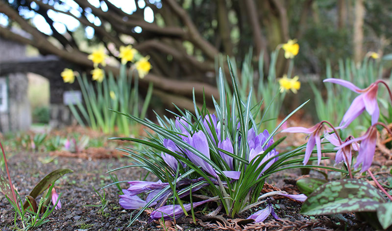
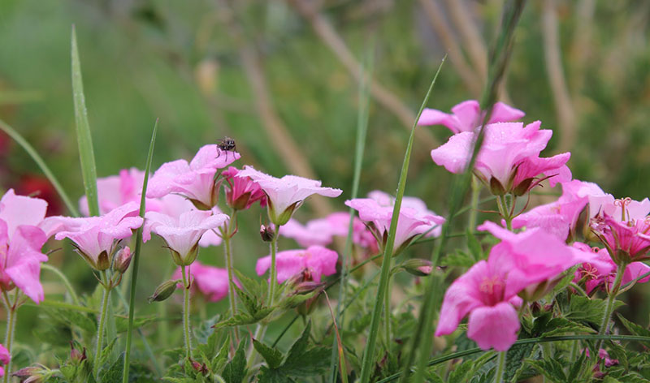

Photography
I have had a passion for photography since starting my A- Level. I have continued trying take attractive imagery since, below are a few examples.



I have had a passion for photography since starting my A- Level. I have continued trying take attractive imagery since, below are a few examples.